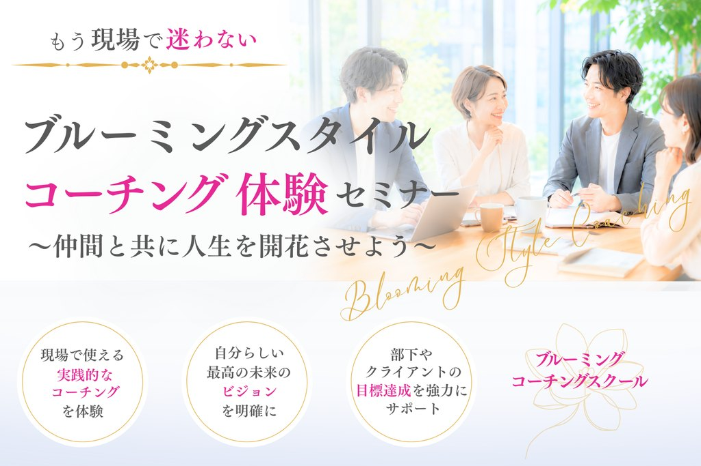

— 自分軸タイプ診断 —
「変わりたい」「もっと成長したい」その気持ち、ちゃんとあるのに動けない。
それは意志が弱いからでも、才能がないからでもありません。
あなたには「止まりやすいパターン」があって、それをまだ知らないだけです。
この診断で、そのパターンを見つけ、あなたに合った「次の一手」を明らかにします。
こんな方におすすめ
正解も不正解もありません。思ったまま、直感で選んでください。
無料・登録不要
Q1
あなたのタイプ

ブルーミング・コーチングスクール
〜仲間と共に人生を開花させよう〜
現場で使える実践的なコーチングを体験し、自分らしい最高の未来のビジョンを明確にする時間です。
日程・参加費・お申込み方法は公式ページでご確認ください
LINEのトーク画面が開きます